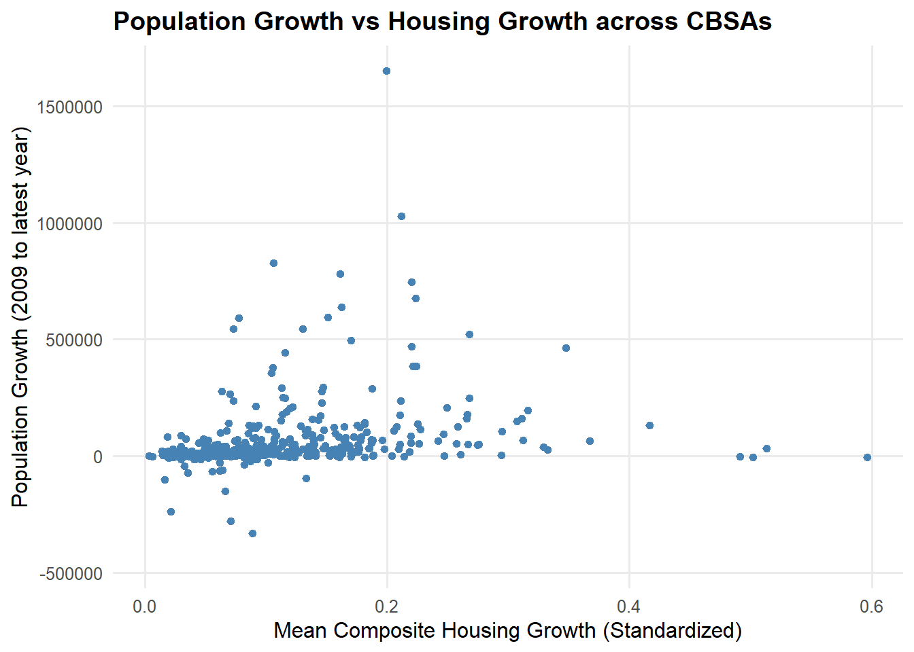
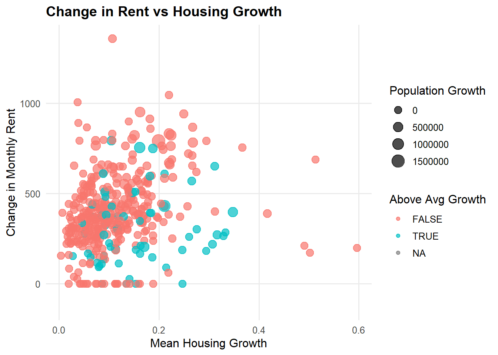

if(!dir.exists(file.path("data", "mp02"))){
dir.create(file.path("data", "mp02"), showWarnings=FALSE, recursive=TRUE)
}
library <- function(pkg){
## Mask base::library() to automatically install packages if needed
## Masking is important here so downlit picks up packages and links
## to documentation
pkg <- as.character(substitute(pkg))
options(repos = c(CRAN = "https://cloud.r-project.org"))
if(!require(pkg, character.only=TRUE, quietly=TRUE)) install.packages(pkg)
stopifnot(require(pkg, character.only=TRUE, quietly=TRUE))
}
library(tidyverse)
library(glue)
library(readxl)
library(tidycensus)
get_acs_all_years <- function(variable, geography="cbsa",
start_year=2009, end_year=2023){
fname <- glue("{variable}_{geography}_{start_year}_{end_year}.csv")
fname <- file.path("data", "mp02", fname)
if(!file.exists(fname)){
YEARS <- seq(start_year, end_year)
YEARS <- YEARS[YEARS != 2020] # Drop 2020 - No survey (covid)
ALL_DATA <- map(YEARS, function(yy){
tidycensus::get_acs(geography, variable, year=yy, survey="acs1") |>
mutate(year=yy) |>
select(-moe, -variable) |>
rename(!!variable := estimate)
}) |> bind_rows()
write_csv(ALL_DATA, fname)
}
read_csv(fname, show_col_types=FALSE)
}
# Household income (12 month)
INCOME <- get_acs_all_years("B19013_001") |>
rename(household_income = B19013_001)
# Monthly rent
RENT <- get_acs_all_years("B25064_001") |>
rename(monthly_rent = B25064_001)
# Total population
POPULATION <- get_acs_all_years("B01003_001") |>
rename(population = B01003_001)
# Total number of households
HOUSEHOLDS <- get_acs_all_years("B11001_001") |>
rename(households = B11001_001)STA 9750 Miniproject 2
While NIMBYs fight to freeze neighborhoods in place, YIMBYs recognize that progress comes from building upward and outward. By analyzing national data on rent burden and housing growth, this week’s project demonstrates that expanding supply truly makes housing more affordable. The results make a compelling case for embracing the YIMBY approach.
First, we will import data from the American Census Bureau
Then, we will add additional housing units from 2009-2023.
get_building_permits <- function(start_year = 2009, end_year = 2023){
fname <- glue("housing_units_{start_year}_{end_year}.csv")
fname <- file.path("data", "mp02", fname)
if(!file.exists(fname)){
HISTORICAL_YEARS <- seq(start_year, 2018)
HISTORICAL_DATA <- map(HISTORICAL_YEARS, function(yy){
historical_url <- glue("https://www.census.gov/construction/bps/txt/tb3u{yy}.txt")
LINES <- readLines(historical_url)[-c(1:11)]
CBSA_LINES <- str_detect(LINES, "^[[:digit:]]")
CBSA <- as.integer(str_sub(LINES[CBSA_LINES], 5, 10))
PERMIT_LINES <- str_detect(str_sub(LINES, 48, 53), "[[:digit:]]")
PERMITS <- as.integer(str_sub(LINES[PERMIT_LINES], 48, 53))
data_frame(CBSA = CBSA,
new_housing_units_permitted = PERMITS,
year = yy)
}) |> bind_rows()
CURRENT_YEARS <- seq(2019, end_year)
CURRENT_DATA <- map(CURRENT_YEARS, function(yy){
current_url <- glue("https://www.census.gov/construction/bps/xls/msaannual_{yy}99.xls")
temp <- tempfile()
download.file(current_url, destfile = temp, mode="wb")
fallback <- function(.f1, .f2){
function(...){
tryCatch(.f1(...),
error=function(e) .f2(...))
}
}
reader <- fallback(read_xlsx, read_xls)
reader(temp, skip=5) |>
na.omit() |>
select(CBSA, Total) |>
mutate(year = yy) |>
rename(new_housing_units_permitted = Total)
}) |> bind_rows()
ALL_DATA <- rbind(HISTORICAL_DATA, CURRENT_DATA)
write_csv(ALL_DATA, fname)
}
read_csv(fname, show_col_types=FALSE)
}
PERMITS <- get_building_permits()Then, we will get NACIS Data
library(httr2)
library(rvest)
get_bls_industry_codes <- function(){
fname <- fname <- file.path("data", "mp02", "bls_industry_codes.csv")
if(!file.exists(fname)){
resp <- request("https://www.bls.gov") |>
req_url_path("cew", "classifications", "industry", "industry-titles.htm") |>
req_headers(`User-Agent` = "Mozilla/5.0 (Macintosh; Intel Mac OS X 10.15; rv:143.0) Gecko/20100101 Firefox/143.0") |>
req_error(is_error = \(resp) FALSE) |>
req_perform()
resp_check_status(resp)
naics_table <- resp_body_html(resp) |>
html_element("#naics_titles") |>
html_table() |>
mutate(title = str_trim(str_remove(str_remove(`Industry Title`, Code), "NAICS"))) |>
select(-`Industry Title`) |>
mutate(depth = if_else(nchar(Code) <= 5, nchar(Code) - 1, NA)) |>
filter(!is.na(depth))
naics_table <- naics_table |>
filter(depth == 4) |>
rename(level4_title=title) |>
mutate(level1_code = str_sub(Code, end=2),
level2_code = str_sub(Code, end=3),
level3_code = str_sub(Code, end=4)) |>
left_join(naics_table, join_by(level1_code == Code)) |>
rename(level1_title=title) |>
left_join(naics_table, join_by(level2_code == Code)) |>
rename(level2_title=title) |>
left_join(naics_table, join_by(level3_code == Code)) |>
rename(level3_title=title) |>
select(-starts_with("depth")) |>
rename(level4_code = Code) |>
select(level1_title, level2_title, level3_title, level4_title,
level1_code, level2_code, level3_code, level4_code)
write_csv(naics_table, fname)
}
read_csv(fname, show_col_types=FALSE)
}
INDUSTRY_CODES <- get_bls_industry_codes()Finally, we scrape BLS Quarterly Census of Employment and Wages
library(httr2)
library(rvest)
get_bls_qcew_annual_averages <- function(start_year=2009, end_year=2023){
fname <- glue("bls_qcew_{start_year}_{end_year}.csv.gz")
fname <- file.path("data", "mp02", fname)
YEARS <- seq(start_year, end_year)
YEARS <- YEARS[YEARS != 2020] # Drop Covid year to match ACS
if(!file.exists(fname)){
ALL_DATA <- map(YEARS, .progress=TRUE, possibly(function(yy){
fname_inner <- file.path("data", "mp02", glue("{yy}_qcew_annual_singlefile.zip"))
if(!file.exists(fname_inner)){
request("https://www.bls.gov") |>
req_url_path("cew", "data", "files", yy, "csv",
glue("{yy}_annual_singlefile.zip")) |>
req_headers(`User-Agent` = "Mozilla/5.0 (Macintosh; Intel Mac OS X 10.15; rv:143.0) Gecko/20100101 Firefox/143.0") |>
req_retry(max_tries=5) |>
req_perform(fname_inner)
}
if(file.info(fname_inner)$size < 755e5){
warning(sQuote(fname_inner), "appears corrupted. Please delete and retry this step.")
}
read_csv(fname_inner,
show_col_types=FALSE) |>
mutate(YEAR = yy) |>
select(area_fips,
industry_code,
annual_avg_emplvl,
total_annual_wages,
YEAR) |>
filter(nchar(industry_code) <= 5,
str_starts(area_fips, "C")) |>
filter(str_detect(industry_code, "-", negate=TRUE)) |>
mutate(FIPS = area_fips,
INDUSTRY = as.integer(industry_code),
EMPLOYMENT = as.integer(annual_avg_emplvl),
TOTAL_WAGES = total_annual_wages) |>
select(-area_fips,
-industry_code,
-annual_avg_emplvl,
-total_annual_wages) |>
# 10 is a special value: "all industries" , so omit
filter(INDUSTRY != 10) |>
mutate(AVG_WAGE = TOTAL_WAGES / EMPLOYMENT)
})) |> bind_rows()
write_csv(ALL_DATA, fname)
}
ALL_DATA <- read_csv(fname, show_col_types=FALSE)
ALL_DATA_YEARS <- unique(ALL_DATA$YEAR)
YEARS_DIFF <- setdiff(YEARS, ALL_DATA_YEARS)
if(length(YEARS_DIFF) > 0){
stop("Download failed for the following years: ", YEARS_DIFF,
". Please delete intermediate files and try again.")
}
ALL_DATA
}
WAGES <- get_bls_qcew_annual_averages()The following questions will explore the housing data and help familiarize the overarching issue
Which CBSA (by name) permitted the largest number of new housing units in the decade from 2010 to 2019 (inclusive)?
#Step 1: Create query permits_summary and filter years 2010-2019 permits_summary <- PERMITS %>% filter(year >= 2010, year <= 2019) %>% group_by(CBSA) %>% summarise(total_units = sum(new_housing_units_permitted, na.rm = TRUE)) %>% ungroup() # Step 2: Prepare crosswalk from ACS data cbsa_xwalk <- INCOME %>% select(GEOID, NAME) %>% distinct() %>% mutate(CBSA = as.integer(GEOID)) # Step 3: Join to get CBSA names permits_with_names <- permits_summary %>% left_join(cbsa_xwalk, by = "CBSA") %>% arrange(desc(total_units)) # Step 4: Show the top result top_cbsa <- permits_with_names %>% slice(1) top_cbsa# A tibble: 1 × 4 CBSA total_units GEOID NAME <dbl> <dbl> <dbl> <chr> 1 26420 482075 26420 Houston-Sugar Land-Baytown, TX Metro Area
Houston Sugar Land Baytown had the highest amount of new housing units from 2010-2019!
#2: In what year did Albuquerque, NM, permit the most new housing units?
albuquerque_trend <- PERMITS %>%
filter(CBSA == 10740) %>%
group_by(year) %>%
summarise(total_units = sum(new_housing_units_permitted, na.rm = TRUE)) %>%
arrange(desc(total_units))
# View the trend
albuquerque_trend# A tibble: 15 × 2
year total_units
<dbl> <dbl>
1 2021 4021
2 2022 2852
3 2023 2834
4 2013 2606
5 2014 2543
6 2016 2465
7 2015 2295
8 2017 2256
9 2018 2186
10 2019 2148
11 2012 2084
12 2020 2014
13 2010 1764
14 2009 1692
15 2011 1634peak_year <- albuquerque_trend %>% slice(1)
peak_year# A tibble: 1 × 2
year total_units
<dbl> <dbl>
1 2021 40212021 was the year with the highest amount of housing units, possibly due to low interest rates and a post-COVID backlog of construction demand.
#3: Which state had the highest average individual income in 2015?
library(dplyr)
library(stringr)
# Step 1: Join ACS datasets by GEOID and year
acs_combined <- INCOME %>%
inner_join(HOUSEHOLDS, by = c("GEOID", "NAME", "year")) %>%
inner_join(POPULATION, by = c("GEOID", "NAME", "year"))
# Step 2: Filter for 2015
acs_2015 <- acs_combined %>%
filter(year == 2015)
# Step 3: Compute total income per CBSA
acs_2015 <- acs_2015 %>%
mutate(total_income = household_income * households)
# Step 4: Extract the *principal* state (first two-letter code in CBSA name)
acs_2015 <- acs_2015 %>%
mutate(state = str_extract(NAME, ", (.{2})", group = 1))
# Step 5: Summarize total income and total population per state
state_summary <- acs_2015 %>%
group_by(state) %>%
summarise(
total_income = sum(total_income, na.rm = TRUE),
total_population = sum(population, na.rm = TRUE),
avg_individual_income = total_income / total_population
) %>%
arrange(desc(avg_individual_income))
# Step 6: Get top state
top_state <- state_summary %>% slice(1)
top_state# A tibble: 1 × 4
state total_income total_population avg_individual_income
<chr> <dbl> <dbl> <dbl>
1 DC 202663489140 6098283 33233.DC was the “State” with the highest average individual income, signifying a high concentration of high-income sectors such as federal agencies, consulting firms, etc.
- What was the last year in which the NYC CBSA had the most data scientists in the country?
library(dplyr)
library(stringr)
# Step 1: Prepare a CBSA name lookup from ACS data
cbsa_lookup <- INCOME %>%
select(GEOID, NAME) %>%
distinct() %>%
mutate(std_cbsa = paste0("C", GEOID)) # Census convention: prefix 'C'
# Step 2: Filter BLS data for NAICS 5182 (Data Scientists & Analysts)
data_sci <- WAGES %>%
filter(INDUSTRY == 5182) %>%
mutate(std_cbsa = paste0(FIPS, "0")) # BLS convention: suffix '0'
# Step 3: Join BLS to CBSA names
data_sci_named <- suppressWarnings(
data_sci %>%
inner_join(cbsa_lookup, join_by(std_cbsa == std_cbsa))
)
# Step 4: Find which CBSA had the most data scientists each year
cbsa_top_by_year <- data_sci_named %>%
group_by(YEAR, NAME) %>%
summarise(total_employment = sum(EMPLOYMENT, na.rm = TRUE), .groups = "drop") %>%
arrange(YEAR, desc(total_employment)) %>%
group_by(YEAR) %>%
slice(1) %>%
ungroup()
# Step 5: Identify the last year NYC was #1
nyc_last_top <- cbsa_top_by_year %>%
filter(str_detect(NAME, "New York")) %>%
summarise(last_year_top = max(YEAR))
nyc_last_top# A tibble: 1 × 1
last_year_top
<dbl>
1 20152015 was the last year where NYC CBSA had the highest amount of data scientists
#5: What fraction of total wages in the NYC CBSA was earned by people employed in the finance and insurance industries (NAICS code 52)? In what year did this fraction peak?
library(dplyr)
library(stringr)
# Step 1: Create standardized CBSA code for joining
wages_std <- WAGES %>%
mutate(std_cbsa = paste0(FIPS, "0")) # add trailing 0 to match Census convention
# Step 2: Identify NYC CBSA
nyc_cbsa <- "35620"
nyc_std_cbsa <- paste0("C", nyc_cbsa)
# Step 3: Filter for NYC CBSA only
nyc_wages <- wages_std %>%
filter(std_cbsa == paste0("C", nyc_cbsa) | FIPS == nyc_cbsa | FIPS == "35620") # flexible match
# Step 4: Compute total wages and finance wages per year
nyc_summary <- nyc_wages %>%
group_by(YEAR) %>%
summarise(
total_wages = sum(TOTAL_WAGES, na.rm = TRUE),
finance_wages = sum(TOTAL_WAGES[INDUSTRY == 52 | str_starts(as.character(INDUSTRY), "52")],
na.rm = TRUE)
) %>%
mutate(finance_fraction = finance_wages / total_wages) %>%
arrange(YEAR)
# Step 5: Identify peak year
peak_year <- nyc_summary %>%
filter(finance_fraction == max(finance_fraction, na.rm = TRUE))
nyc_summary# A tibble: 14 × 4
YEAR total_wages finance_wages finance_fraction
<dbl> <dbl> <dbl> <dbl>
1 2009 2194200174111 206223026063 0.0940
2 2010 2366455158958 363922560518 0.154
3 2011 2452875238158 337460139179 0.138
4 2012 2543568475824 361225542250 0.142
5 2013 2663041532424 316780948682 0.119
6 2014 2587096519796 368544350266 0.142
7 2015 3008221071967 383349052749 0.127
8 2016 3038312046515 352181610994 0.116
9 2017 3176952501734 436667758453 0.137
10 2018 3196707717054 429401942724 0.134
11 2019 3617150803059 489522399195 0.135
12 2021 3636399927489 577101733960 0.159
13 2022 4104601808975 559385567580 0.136
14 2023 4160135177511 497713155936 0.120 peak_year# A tibble: 1 × 4
YEAR total_wages finance_wages finance_fraction
<dbl> <dbl> <dbl> <dbl>
1 2021 3636399927489 577101733960 0.15915.8% of total wages were earned by people in the Finance and Insurance industries. And that number peaked in 2021!
We will create several visualizations using the data provided!
- Monthly rent vs average household income (circa 2009)
library(dplyr)
library(ggplot2)
library(scales)#Filter income to 2009
rent_income_2009 <- RENT %>%
filter(year == 2009) %>%
select(GEOID, NAME, monthly_rent) %>%
inner_join(
INCOME %>% filter(year == 2009) %>% select(GEOID, household_income),
by = "GEOID"
)
#Create the graph
ggplot(rent_income_2009, aes(x = household_income, y = monthly_rent)) +
geom_point(alpha = 0.7) +
geom_smooth(method = "lm", se = TRUE, linewidth = 1) +
scale_x_continuous(labels = label_dollar(accuracy = 1)) +
scale_y_continuous(labels = label_dollar(accuracy = 1)) +
labs(
title = "Monthly Rent vs. Household Income (CBSA, 2009)",
x = "Median Household Income (USD)",
y = "Median Monthly Rent (USD)"
) +
theme_minimal(base_size = 13) +
theme(
plot.title = element_text(face = "bold"),
panel.grid.minor = element_blank()
)`geom_smooth()` using formula = 'y ~ x'
We can see in the graph that median household income has a positive correlation with median rent!
- What is the relationship between total employment and and total employment in the healthcare and social services sector(NACIS 62) across different CBSAs.
library(dplyr) library(stringr) library(ggplot2) library(scales) # Aggregate from WAGES emp_by_cbsa_year <- WAGES %>% group_by(FIPS, YEAR) %>% summarise( total_emp = sum(EMPLOYMENT, na.rm = TRUE), health_emp = sum(EMPLOYMENT[str_starts(as.character(INDUSTRY), "62")], na.rm = TRUE), .groups = "drop" ) # Optional: add CBSA names for tooltips/labels (not necessary for the plot) cbsa_names <- INCOME %>% select(GEOID, NAME) %>% distinct() %>% mutate(FIPS = paste0("C", GEOID)) # WAGES uses 'C#####' for CBSA emp_by_cbsa_year <- emp_by_cbsa_year %>% left_join(cbsa_names, by = "FIPS") # Faceted scatter by year (evolution over time) ggplot(emp_by_cbsa_year, aes(x = total_emp, y = health_emp)) + geom_point(alpha = 0.6) + facet_wrap(~ YEAR, ncol = 4) + scale_x_continuous(labels = label_comma()) + scale_y_continuous(labels = label_comma()) + labs( title = "Health Care & Social Assistance Employment vs. Total Employment by CBSA", subtitle = "NAICS 62; small multiples show evolution over time", x = "Total Employment (all industries)", y = "Employment in Health Care & Social Assistance (NAICS 62)" ) + theme_minimal(base_size = 12.5) + theme( plot.title = element_text(face = "bold"), panel.grid.minor = element_blank(), strip.text = element_text(face = "bold") )
- What is the evolution of average household size over time?
library(dplyr) library(ggplot2) library(scales) # Compute average household size per CBSA & year hhsize <- POPULATION %>% select(GEOID, NAME, year, population) %>% inner_join( HOUSEHOLDS %>% select(GEOID, year, households), by = c("GEOID", "year") ) %>% mutate(avg_hh_size = population / households) # Choose top N CBSAs by population in a reference year for clarity N <- 10 top_cbsa <- hhsize %>% filter(year == 2015) %>% arrange(desc(population)) %>% slice_head(n = N) %>% pull(GEOID) hhsize_top <- hhsize %>% filter(GEOID %in% top_cbsa) hhsize_top <- hhsize_top %>% mutate( # Normalize all dash types to a single hyphen first NAME = str_replace_all(NAME, "[–—]", "-"), # Remove everything after the first hyphen (keeps first city) NAME = str_replace(NAME, "-.*", ""), # Trim any trailing spaces NAME = str_trim(NAME) ) ggplot(hhsize_top, aes(x = year, y = avg_hh_size, color = NAME, group = NAME)) + geom_line(linewidth = 1) + geom_point(size = 1.5) + scale_y_continuous(labels = label_number(accuracy = 0.01)) + labs( title = "Evolution of Average Household Size", subtitle = paste0("Top ", N, " CBSAs by population (reference: 2015)"), x = "Year", y = "Average Household Size (persons per household)", color = "CBSA" ) + theme_minimal(base_size = 12.5) + theme( plot.title = element_text(face = "bold"), panel.grid.minor = element_blank(), legend.position = "bottom", legend.key.width = unit(1.4, "lines") )
Interestingly, the average household size has went down over the years for ALL CBSAs overall, with no one trend showing anything going up. While some household sizes in CBSAs like Washington and Miami went up from 2012-2016, the overall trend lays down.
Now, we will join together the Income and Rent tables, and with the data construct a suitable measure of how much income a typical resident spends on housing.
library(dplyr)
rent_income <- RENT %>%
inner_join(INCOME, by = c("GEOID", "NAME", "year")) %>%
mutate(
rent_to_income = (monthly_rent * 12) / household_income
)
# Establish baseline (national average in 2009)
baseline_2009 <- rent_income %>%
filter(year == 2009) %>%
summarise(baseline = mean(rent_to_income, na.rm = TRUE)) %>%
pull(baseline)
# Create standardized index
rent_income <- rent_income %>%
mutate(
rent_burden_index = (rent_to_income / baseline_2009) * 100
)
library(DT)
metro_name <- "New York-Newark-Jersey City, NY-NJ-PA Metro Area"
metro_table <- rent_income %>%
filter(NAME == metro_name) %>%
select(NAME, year, monthly_rent, household_income,
rent_to_income, rent_burden_index) %>%
arrange(year)
datatable(
metro_table,
caption = paste0("Rent Burden Evolution for ", metro_name),
options = list(pageLength = 10, autoWidth = TRUE, scrollX = TRUE),
rownames = FALSE
)# Latest year in your data (or pick one, e.g., 2023)
latest_year <- max(rent_income$year, na.rm = TRUE)
top_bottom <- rent_income %>%
filter(year == latest_year) %>%
arrange(desc(rent_burden_index)) %>%
select(NAME, year, rent_burden_index, rent_to_income, monthly_rent, household_income)
top10 <- head(top_bottom, 10)
bottom10 <- tail(top_bottom, 10)
datatable(top10, caption = paste0("Top 10 CBSAs by Rent Burden (", latest_year, ")"),
options = list(pageLength = 10, autoWidth = TRUE, scrollX = TRUE), rownames = FALSE)datatable(bottom10, caption = paste0("Lowest 10 CBSAs by Rent Burden (", latest_year, ")"),
options = list(pageLength = 10, autoWidth = TRUE, scrollX = TRUE), rownames = FALSE)The following code standardizes
*We define the Rent Burden Index (RBI) so that 100 corresponds to the national average rent-to-income ratio in 2009, the first year of our study.
Now its time to take a look at housing growth!
library(dplyr)
# Assume the tables are named POPULATION and PERMITS
# POPULATION: CBSA, YEAR, POP
# PERMITS: CBSA, YEAR, PERMITS
# Join using GEOID = CBSA and year = year
cbsa_data <- inner_join(POPULATION, PERMITS,
by = c("GEOID" = "CBSA", "year" = "year"))
#Calculate rolling 5 year Population Growth
cbsa_data <- cbsa_data %>%
arrange(GEOID, year) %>%
group_by(GEOID) %>%
mutate(
POP_5YRS_AGO = lag(population, 5),
POP_GROWTH_5YRS = population - POP_5YRS_AGO
) %>%
ungroup()
#Construct your metric
cbsa_data <- cbsa_data %>%
mutate(
# Instantaneous metric: permits per 1,000 people
PERMIT_PER_1000 = (new_housing_units_permitted / population) * 1000,
# Rate-based metric: permits per 1,000 new residents (5-year growth)
PERMIT_PER_POPGROWTH = ifelse(!is.na(POP_GROWTH_5YRS) & POP_GROWTH_5YRS > 0,
(new_housing_units_permitted / POP_GROWTH_5YRS) * 1000, NA))
#Standardize each metric
cbsa_data <- cbsa_data %>%
group_by(year) %>%
mutate(
PERMIT_PER_1000_STD = (PERMIT_PER_1000 - min(PERMIT_PER_1000, na.rm=TRUE)) /
(max(PERMIT_PER_1000, na.rm=TRUE) - min(PERMIT_PER_1000, na.rm=TRUE)),
PERMIT_PER_POPGROWTH_STD = (PERMIT_PER_POPGROWTH - min(PERMIT_PER_POPGROWTH, na.rm=TRUE)) /
(max(PERMIT_PER_POPGROWTH, na.rm=TRUE) - min(PERMIT_PER_POPGROWTH, na.rm=TRUE))
) %>%
ungroup()
#Identify high and law CBSAs
latest_year <- max(cbsa_data$year, na.rm=TRUE)
cat("\n=== Top 5 CBSAs: Instantaneous Metric ===\n")
top5_instant <- cbsa_data %>%
filter(year == latest_year) %>%
arrange(desc(PERMIT_PER_1000_STD)) %>%
slice_head(n = 5) # Top 5 instantaneous
cat("\n=== Bottom 5 CBSAs: Instantaneous Metric ===\n")
bottom5_instant <- cbsa_data %>%
filter(year == latest_year) %>%
arrange(PERMIT_PER_1000_STD) %>%
slice_head(n = 5)
# Top 5 CBSAs by rate-based metric (permits per pop growth)
cat("\n=== Top 5 CBSAs: Rate-based Metric ===\n")
top5_rate_Based <- cbsa_data %>%
filter(year == latest_year) %>%
arrange(desc(PERMIT_PER_POPGROWTH_STD)) %>%
slice_head(n = 5)
# Bottom 5 CBSAs by rate-based metric
cat("\n=== Bottom 5 CBSAs: Rate-based Metric ===\n")
bottom5_rate_based <- cbsa_data %>%
filter(year == latest_year) %>%
arrange(PERMIT_PER_POPGROWTH_STD) %>%
slice_head(n = 5)
#Composite score (based on equal-weight averages)
cbsa_data <- cbsa_data %>%
mutate(
COMPOSITE_SCORE = (PERMIT_PER_1000_STD + PERMIT_PER_POPGROWTH_STD) / 2
)
# Top 5 CBSAs by composite score
cat("\n=== Top 5 CBSAs: Composite Score ===\n")
top5_composite <- cbsa_data %>%
filter(year == latest_year) %>%
arrange(desc(COMPOSITE_SCORE)) %>%
slice_head(n = 5)
# Bottom 5 CBSAs by composite score
cat("\n=== Bottom 5 CBSAs: Composite Score ===\n")
bottom5_composite <- cbsa_data %>%
filter(year == latest_year) %>%
arrange(COMPOSITE_SCORE) %>%
slice_head(n = 5)Top 5 Instant (measured in PERMIT_PER_1000_STD)
top5_instant# A tibble: 5 × 11
GEOID NAME population year new_housing_units_pe…¹ POP_5YRS_AGO
<dbl> <chr> <dbl> <dbl> <dbl> <dbl>
1 41540 Salisbury, MD Metr… 129710 2023 4894 405853
2 34820 Myrtle Beach-Conwa… 397478 2023 13176 464165
3 39460 Punta Gorda, FL Me… 206134 2023 4429 182033
4 18880 Crestview-Fort Wal… 304818 2023 5596 271346
5 35840 North Port-Bradent… 910108 2023 15928 804690
# ℹ abbreviated name: ¹new_housing_units_permitted
# ℹ 5 more variables: POP_GROWTH_5YRS <dbl>, PERMIT_PER_1000 <dbl>,
# PERMIT_PER_POPGROWTH <dbl>, PERMIT_PER_1000_STD <dbl>,
# PERMIT_PER_POPGROWTH_STD <dbl>The Salisbury, MD Metro Area had the highest housing units permitted per 1000 people!
Bottom 5 Instant
bottom5_instant# A tibble: 5 × 11
GEOID NAME population year new_housing_units_pe…¹ POP_5YRS_AGO
<dbl> <chr> <dbl> <dbl> <dbl> <dbl>
1 48540 Wheeling, WV-OH Me… 135517 2023 11 141254
2 19180 Danville, IL Micro… 71652 2023 8 77909
3 34060 Morgantown, WV Met… 141817 2023 17 138709
4 48260 Weirton-Steubenvil… 114106 2023 16 119664
5 21420 Enid, OK Metro Area 62023 2023 10 61581
# ℹ abbreviated name: ¹new_housing_units_permitted
# ℹ 5 more variables: POP_GROWTH_5YRS <dbl>, PERMIT_PER_1000 <dbl>,
# PERMIT_PER_POPGROWTH <dbl>, PERMIT_PER_1000_STD <dbl>,
# PERMIT_PER_POPGROWTH_STD <dbl>Wheeling, WV had the lowest amount of housing units permitted per 1000 people…
Top 5 Rate-Based (PERMIT_PER_POPGROWTH_STD)
top5_rate_Based# A tibble: 5 × 11
GEOID NAME population year new_housing_units_pe…¹ POP_5YRS_AGO
<dbl> <chr> <dbl> <dbl> <dbl> <dbl>
1 44220 Springfield, OH Me… 134610 2023 215 134557
2 46520 Urban Honolulu, HI… 989408 2023 1851 988650
3 19140 Dalton, GA Metro A… 144722 2023 496 144440
4 15260 Brunswick-St. Simo… 115087 2023 786 114473
5 11260 Anchorage, AK Metr… 401314 2023 457 400888
# ℹ abbreviated name: ¹new_housing_units_permitted
# ℹ 5 more variables: POP_GROWTH_5YRS <dbl>, PERMIT_PER_1000 <dbl>,
# PERMIT_PER_POPGROWTH <dbl>, PERMIT_PER_1000_STD <dbl>,
# PERMIT_PER_POPGROWTH_STD <dbl>Going by a rate-based metric, Springfield, OH had the highest housing permits issued per 1000 people.
Bottom 5 Rate-Based
bottom5_rate_based# A tibble: 5 × 11
GEOID NAME population year new_housing_units_pe…¹ POP_5YRS_AGO
<dbl> <chr> <dbl> <dbl> <dbl> <dbl>
1 12100 Atlantic City-Hamm… 369823 2023 383 269918
2 30980 Longview, TX Metro… 293498 2023 364 217481
3 34060 Morgantown, WV Met… 141817 2023 17 138709
4 31740 Manhattan, KS Metr… 132831 2023 257 98080
5 27180 Jackson, TN Metro … 181826 2023 434 129235
# ℹ abbreviated name: ¹new_housing_units_permitted
# ℹ 5 more variables: POP_GROWTH_5YRS <dbl>, PERMIT_PER_1000 <dbl>,
# PERMIT_PER_POPGROWTH <dbl>, PERMIT_PER_1000_STD <dbl>,
# PERMIT_PER_POPGROWTH_STD <dbl>Atlantic City had the lowest housing permits issued per 1000 people.
Top 5 Composite (measured in COMPOSITE_SCORE)
top5_composite# A tibble: 5 × 12
GEOID NAME population year new_housing_units_pe…¹ POP_5YRS_AGO
<dbl> <chr> <dbl> <dbl> <dbl> <dbl>
1 44220 Springfield, OH Me… 134610 2023 215 134557
2 46520 Urban Honolulu, HI… 989408 2023 1851 988650
3 39460 Punta Gorda, FL Me… 206134 2023 4429 182033
4 18880 Crestview-Fort Wal… 304818 2023 5596 271346
5 19140 Dalton, GA Metro A… 144722 2023 496 144440
# ℹ abbreviated name: ¹new_housing_units_permitted
# ℹ 6 more variables: POP_GROWTH_5YRS <dbl>, PERMIT_PER_1000 <dbl>,
# PERMIT_PER_POPGROWTH <dbl>, PERMIT_PER_1000_STD <dbl>,
# PERMIT_PER_POPGROWTH_STD <dbl>, COMPOSITE_SCORE <dbl>Measuring with a composite score ((Instant Measure + Rate Measure) - 2), Springfield, OH, once again, has the highest amount of units issued per 1000 people!
Bottom 5 Composite
bottom5_composite# A tibble: 5 × 12
GEOID NAME population year new_housing_units_pe…¹ POP_5YRS_AGO
<dbl> <chr> <dbl> <dbl> <dbl> <dbl>
1 34060 Morgantown, WV Met… 141817 2023 17 138709
2 21420 Enid, OK Metro Area 62023 2023 10 61581
3 11500 Anniston-Oxford, A… 116429 2023 64 114728
4 39740 Reading, PA Metro … 432821 2023 352 417854
5 26580 Huntington-Ashland… 367192 2023 290 356474
# ℹ abbreviated name: ¹new_housing_units_permitted
# ℹ 6 more variables: POP_GROWTH_5YRS <dbl>, PERMIT_PER_1000 <dbl>,
# PERMIT_PER_POPGROWTH <dbl>, PERMIT_PER_1000_STD <dbl>,
# PERMIT_PER_POPGROWTH_STD <dbl>, COMPOSITE_SCORE <dbl>Morgantown, WV had the least amount of housing units permitted per 1000 people.
Finally, we will investigate the relationships between Rent Burden and Housing Growth
Population Growth vs Housing Growth across CBSAs
library(ggplot2)
library(dplyr)
library(ggplot2)
# Calculate cumulative population growth per CBSA over the whole period
growth_stats <- cbsa_data %>%
group_by(GEOID, NAME) %>%
summarize(
pop_start = population[year == min(year, na.rm=TRUE)],
pop_end = population[year == max(year, na.rm=TRUE)],
pop_growth = pop_end - pop_start,
composite_growth = mean(COMPOSITE_SCORE, na.rm=TRUE)
)
library(ggplot2)
ggplot(growth_stats, aes(
x = composite_growth,
y = pop_growth
)) +
geom_point(color = "steelblue") +
labs(
title = "Population Growth vs Housing Growth across CBSAs",
x = "Mean Composite Housing Growth (Standardized)",
y = "Population Growth (2009 to latest year)"
) +
theme_minimal(base_size = 12) +
theme(
plot.title = element_text(face = "bold"),
panel.grid.minor = element_blank()
)
Now it’s time to identify the most YIMBY CBSAs!
library(dplyr)
# Only need GEOID and year to join (assuming monthly_rent is the field you want)
cbsa_full <- left_join(cbsa_data, RENT %>% select(GEOID, year, monthly_rent), by = c("GEOID", "year"))
summary_burden <- cbsa_full %>%
group_by(GEOID, NAME) %>%
summarize(
rent_start = monthly_rent[year == min(year, na.rm=TRUE)],
rent_end = monthly_rent[year == max(year, na.rm=TRUE)],
delta_rent = rent_end - rent_start,
pop_start = population[year == min(year, na.rm=TRUE)],
pop_end = population[year == max(year, na.rm=TRUE)],
pop_growth = pop_end - pop_start,
composite_growth = mean(COMPOSITE_SCORE, na.rm=TRUE)
)`summarise()` has grouped output by 'GEOID'. You can override using the
`.groups` argument.library(ggplot2)
# Plot rent trend colored by above/below average housing growth
summary_burden <- summary_burden %>%
mutate(above_avg_growth = composite_growth > mean(composite_growth, na.rm=TRUE))
cbsa_full <- cbsa_full %>%
mutate(above_avg_growth = COMPOSITE_SCORE > mean(COMPOSITE_SCORE, na.rm = TRUE))
ggplot(cbsa_full, aes(x = year, y = monthly_rent, color = above_avg_growth)) +
geom_line(aes(group = GEOID), alpha = 0.1) +
stat_summary(fun = mean, geom = "line", size = 1.3) +
labs(title = "Average Rent Trends by Housing Growth Category",
x = "Year", y = "Average Monthly Rent",
color = "Above Avg Housing Growth")Warning: Using `size` aesthetic for lines was deprecated in ggplot2 3.4.0.
ℹ Please use `linewidth` instead.
library(ggplot2)
ggplot(summary_burden, aes(
x = composite_growth,
y = delta_rent,
size = pop_growth,
color = above_avg_growth
)) +
geom_point(alpha = 0.7) +
labs(
title = "Change in Rent vs Housing Growth",
x = "Mean Housing Growth",
y = "Change in Monthly Rent",
size = "Population Growth",
color = "Above Avg Growth"
) +
theme_minimal(base_size = 12) +
theme(
plot.title = element_text(face = "bold"),
panel.grid.minor = element_blank(),
legend.position = "right"
)Warning: Removed 121 rows containing missing values or values outside the scale range
(`geom_point()`).
yimby_cbsas <- summary_burden %>%
filter(
rent_start > quantile(rent_start, 0.75, na.rm=TRUE), # High starting rent
delta_rent < 0, # Rent decreased
pop_growth > 0, # Population increased
composite_growth > mean(composite_growth, na.rm=TRUE) # Above avg housing growth
) %>%
arrange(delta_rent)
yimby_cbsas %>% select(GEOID, NAME, rent_start, delta_rent, pop_growth, composite_growth)# A tibble: 0 × 6
# Groups: GEOID [0]
# ℹ 6 variables: GEOID <dbl>, NAME <chr>, rent_start <dbl>, delta_rent <dbl>,
# pop_growth <dbl>, composite_growth <dbl>#Function for checking the criteria for a "YIMBY" city
summary_burden <- summary_burden %>%
mutate(
crit_rent = rent_start > quantile(rent_start, 0.75, na.rm=TRUE),
crit_delta = delta_rent < 0,
crit_pop = pop_growth > 0,
crit_growth = composite_growth > mean(composite_growth, na.rm=TRUE),
num_criteria_met = crit_rent + crit_delta + crit_pop + crit_growth
)
print(summary_burden %>%
filter(num_criteria_met >= 3))# A tibble: 17 × 15
# Groups: GEOID [17]
GEOID NAME rent_start rent_end delta_rent pop_start pop_end pop_growth
<dbl> <chr> <dbl> <dbl> <dbl> <dbl> <dbl> <dbl>
1 10540 Albany-Leb… 1034 1134 100 129749 130467 718
2 12420 Austin-Rou… 1327 1599 272 2227083 2421115 194032
3 12540 Bakersfiel… 839 1208 369 807407 916108 108701
4 13460 Bend-Redmo… 900 1186 286 165954 191996 26042
5 14740 Bremerton-… 1433 1808 375 271473 277658 6185
6 21660 Eugene, OR… 863 998 135 356212 379611 23399
7 22660 Fort Colli… 986 1595 609 315988 366778 50790
8 25540 Hartford-E… 1113 1268 155 1204877 1221303 16426
9 28700 Kingsport-… 661 810 149 307707 312490 4783
10 31420 Macon-Bibb… 743 1022 279 226998 233020 6022
11 33100 Miami-Fort… 1120 1914 794 5828191 6183199 355008
12 34740 Muskegon, … 657 993 336 171008 176565 5557
13 35840 North Port… 958 1609 651 732535 891411 158876
14 39580 Raleigh, N… 908 1128 220 1214516 1362540 148024
15 42020 San Luis O… 1203 1430 227 276443 284010 7567
16 44700 Stockton, … 998 1608 610 674860 793229 118369
17 48300 Wenatchee,… 784 1294 510 113438 124118 10680
# ℹ 7 more variables: composite_growth <dbl>, above_avg_growth <lgl>,
# crit_rent <lgl>, crit_delta <lgl>, crit_pop <lgl>, crit_growth <lgl>,
# num_criteria_met <int>#No city met all 4 criteria for a YIMBY city
summary_burden %>%
filter(num_criteria_met == 4) # A tibble: 0 × 15
# Groups: GEOID [0]
# ℹ 15 variables: GEOID <dbl>, NAME <chr>, rent_start <dbl>, rent_end <dbl>,
# delta_rent <dbl>, pop_start <dbl>, pop_end <dbl>, pop_growth <dbl>,
# composite_growth <dbl>, above_avg_growth <lgl>, crit_rent <lgl>,
# crit_delta <lgl>, crit_pop <lgl>, crit_growth <lgl>, num_criteria_met <int>The line chart shows that metros with above-average housing growth (blue) actually experienced faster rent increases over time than those with below-average growth (red), suggesting that strong construction activity often coincides with high-demand, high-cost markets where both housing supply and rent levels rise together.
The scatterplot shows that metros with stronger housing growth generally experienced smaller or more moderate rent increases, while regions with limited construction saw rents rise faster — suggesting that sustained housing production can help ease rent pressures even in growing markets.
Unfortunately there were no CBSAs that fit all 4 of the criteria to indicate an ideal YIMBY. Most notably, none of them have a negative delta, suggesting that an increase in rent across the U.S. is universal.
Policy Brief
America’s cities are currently facing housing affordability challenges. Some, like Bakersfield, CA, have tackled rent burdens through a combination of building homes fast enough to support population growth and keep rent burdens manageable. Many other cities, especially NYC, face high rents and housing shortages that threaten economic viability and workforce stability.
Legislative Sponsors:
Primary Sponsor: Representative from Bakersfield, CA
- Bakersfield is a YIMBY success story: more homes built, a growing population, and rent growth under control.
Co-Sponsor: Representative from New York City, NY
- New York City typifies the NIMBY (“Not-In-My-Back-Yard”) challenge, with persistently high rents and insufficient new housing construction.
Key Support Groups:
To maximize impact and secure passage, the bill is tailored to win support from:
Teachers and healthcare workers: Thousands of these essential professionals work in both metro areas, with healthcare and teaching representing Bakersville’s two largest sectors of employment. Lowering rents enhances their quality of life and keeps vital services staffed.
Restaurant and entertainment industry workers: When residents spend less on rent, they have more discretionary income to dine out, attend shows, and enjoy the city’s cultural life—directly increasing demand for restaurants, live performances, and hospitality services
Policy Impact:
Bakersfield will be rewarded for policies that keep housing affordable and population growing, securing grants for further expansion and economic opportunity.
New York City stands to benefit most, with resources and incentives to jump-start a new era of housing growth, reduce rent burden, and attract and retain talent and industry.
Performance Metrics:
Rent Burden: We track whether average rent is increasing or decreasing over time—making sure cities are affordable for families and workers.
Housing Growth: We monitor the rate of new home construction compared to population growth—ensuring enough homes for everyone.
Summary:
The proposed bill offers cities a proven path to affordability and growth. It supports essential workers, strengthens the local economy, and channels resources where effective policies deliver real results. Bakersfield’s leadership shows what’s possible—now is the time to help cities like New York unlock similar success.
Sources:
“Bakersfield, CA.” Data USA, datausa.io/profile/geo/bakersfield-ca/. Accessed 30 Oct. 2025.